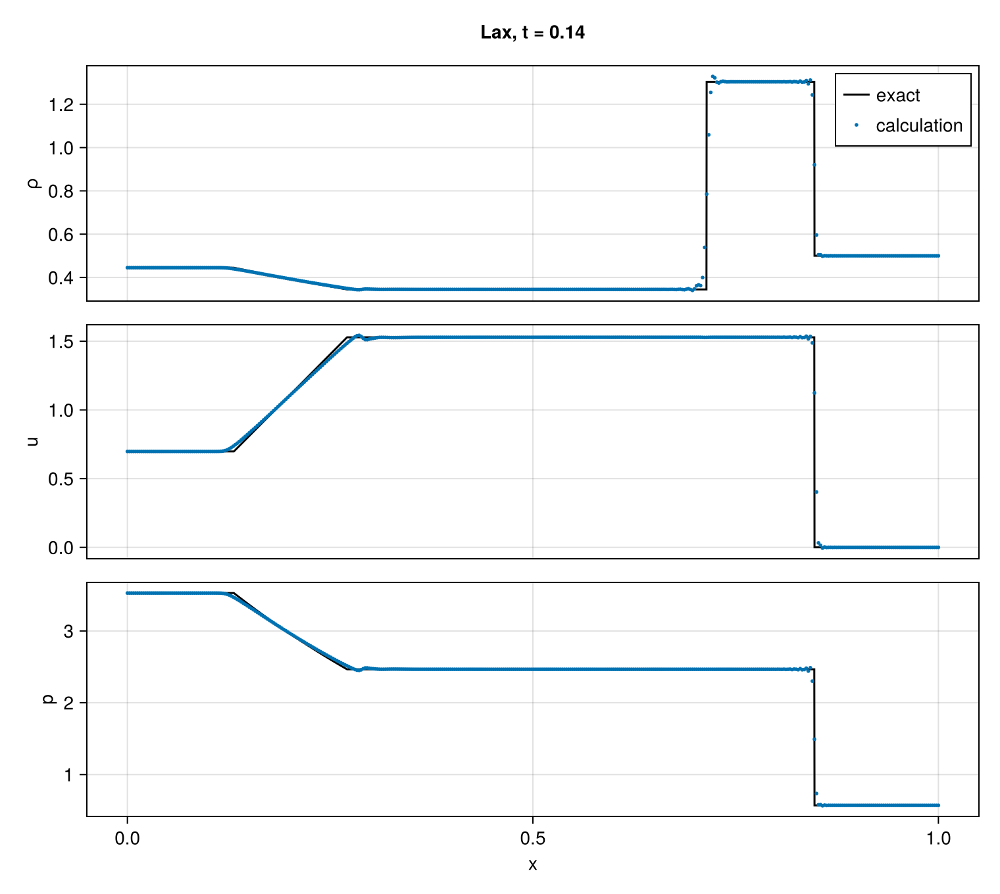
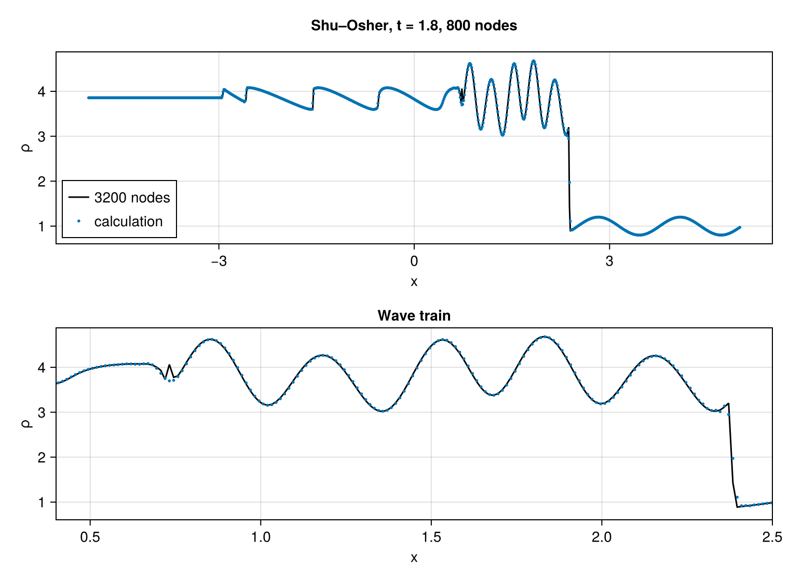
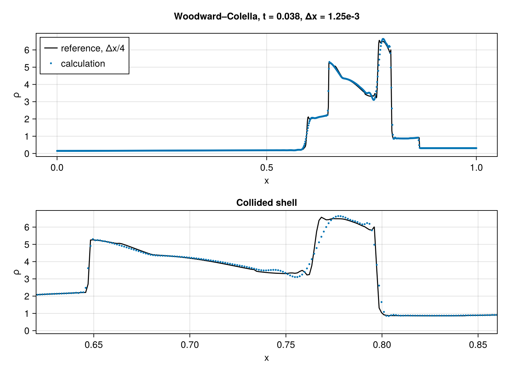
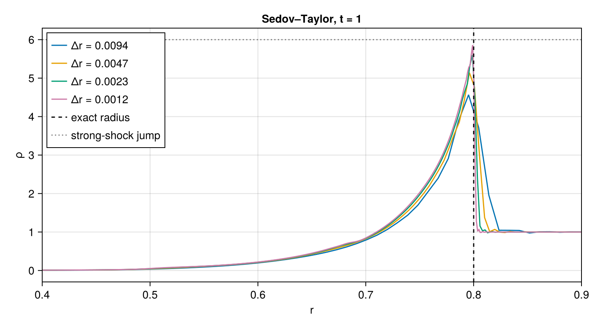
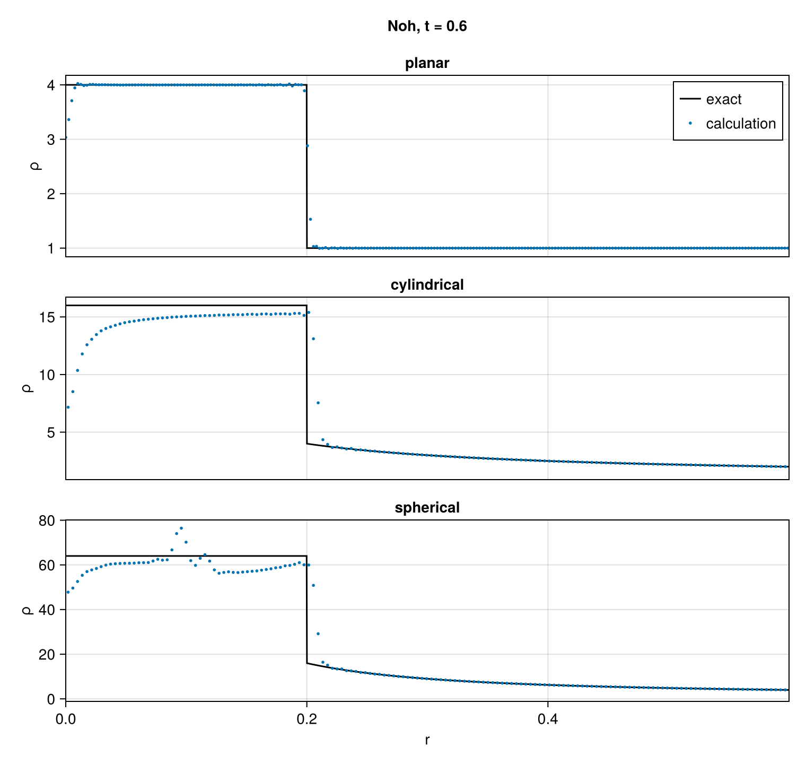
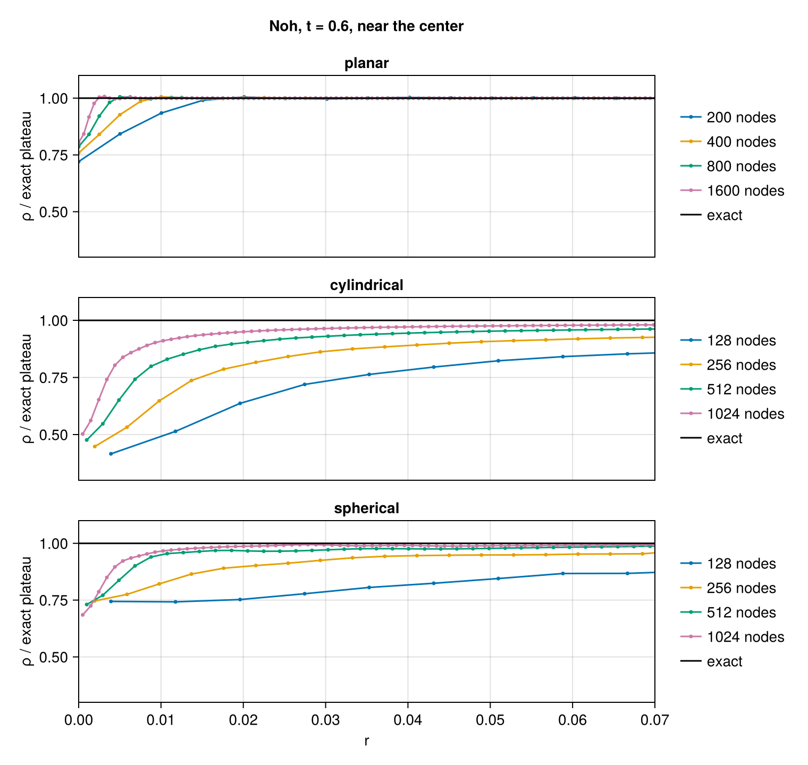

Shock-capturing tests
The figures on this page were computed on 2026-09-30 at commit f31fff9, with Julia 1.11.4 on 1 rank × 1 thread of a 12th Gen Intel(R) Core(TM) i9-12900K, on one-dimensional lines of 128 to 1600 nodes, in 3 min. They are reproduced by julia --project=docs examples/shock_capturing.jl.
A few one-dimensional problems serve as the common test of a shock-capturing scheme, each exposing one way in which a captured shock can go wrong. This page runs six of them with the default numerics of CompactLES:
- the Lax shock tube, a Riemann problem with an exact solution;
- the Shu–Osher problem, a shock running into a density wave;
- the Woodward–Colella blast waves, two strong shocks colliding between reflecting walls;
- the Sedov–Taylor blast wave through the origin of a sphere;
- the Noh implosion onto a plane, an axis and the origin of a sphere.
These are the cases of the shock-capturing validation battery, test/validation.jl. They are defined once, in test/cases.jl, and included here, so the profiles on this page are those behind the numbers the battery checks. Every case uses sixth-order compact derivatives, the compact filter and the artificial properties at their defaults, the numerics of the Shock tube tutorial; only the CFL number differs from case to case. Each section prints the errors it measures, and the text quotes them.
using CompactLES # re-exports MPI
MPI.Initialized() || MPI.Init(threadlevel=:funneled)
using CairoMakie
using Printf
CairoMakie.activate!(type = "png")Cases
test/references.jl holds the exact solutions (the Riemann solver, the Noh solution and the Sedov–Taylor shock radius) and test/cases.jl the case constructors. Each constructor builds a Problem, runs it and returns the density, velocity and pressure along the line, whether the run reached its final time, and for some cases the closing state_report. The case definitions refer to the package as CL.
const CL = CompactLES
include(joinpath(@__DIR__, "..", "test", "references.jl"))
include(joinpath(@__DIR__, "..", "test", "cases.jl"))
named(r) = (x = r[1], rho = r[2], u = r[3], p = r[4], completed = r[5],
report = length(r) > 5 ? r[6] : nothing)The script takes one setting, smoke. With smoke=true every case stops after five steps rather than at its final time (NMAX is the step ceiling of the case definitions), which checks that the page still runs; the figures come from the full run.
opt = CompactLES.script_args(ARGS, (smoke = false,))
nmax = opt.smoke ? 5 : NMAXIn the figures the calculation is drawn as points and its reference as a line.
function overlay!(ax, x, calc, xref, ref; reference = "exact")
lines!(ax, xref, ref, color = :black, label = reference)
scatter!(ax, x, calc, markersize = 4, color = Makie.wong_colors()[1],
label = "calculation")
return ax
endLax
The Lax problem is a Riemann problem in a gas with $\gamma = 1.4$: at $t = 0$ the gas at $x < 0.5$ has $(\rho, u, p) = (0.445, 0.698, 3.528)$ and the gas at $x > 0.5$ has $(0.5, 0, 0.571)$. It resolves into a rarefaction running left, a contact and a shock running right. Unlike Sod's problem, the left state carries momentum, so the star states lie far from both initial states. The line has 400 nodes on $[0, 1]$, the diaphragm is spread over two cells, and the run ends at $t = 0.14$ at a CFL number of 0.4. Both ends hold their initial state, which is exact until a wave reaches them.
lax_run = named(lax(; nmax))
lax_exact(x) = riemann_profile(x, LAX_T, 0.5, LAX_L, LAX_R, 1.4)
lax_error = [l1(getfield(lax_run, f), [lax_exact(x)[k] for x in lax_run.x])
for (k, f) in enumerate((:rho, :u, :p))]
@printf("Lax, %d nodes: L1 error rho %.2e, u %.2e, p %.2e\n",
length(lax_run.x), lax_error...)
fig = Figure(size = (760, 680))
fine = range(0, 1; length = 4001)
for (k, (f, label)) in enumerate(((:rho, "ρ"), (:u, "u"), (:p, "p")))
ax = Axis(fig[k, 1], ylabel = label, xlabel = k == 3 ? "x" : "")
overlay!(ax, lax_run.x, getfield(lax_run, f), fine, [lax_exact(x)[k] for x in fine])
k < 3 && hidexdecorations!(ax, grid = false)
k == 1 && axislegend(ax, position = :rt)
end
Label(fig[0, 1], "Lax, t = 0.14", font = :bold, tellwidth = false)
The L1 errors, the mean absolute differences over the 400 nodes, are $4.9 \times 10^{-3}$ in density and $7.5 \times 10^{-3}$ in velocity and pressure. Of the density error, 60% lies within 20 cells of the contact and 32% within 20 cells of the shock. The contact rises from 10% to 90% of its jump over 3.5 cells and the shock over 2. Next to the waves the calculation departs from the exact profile by up to 1.9% in density and 0.9% in velocity. Between the rarefaction and the contact it agrees with the exact state to 0.25% in density and 0.04% in velocity and pressure.
Shu–Osher
Shu and Osher (1989) posed a Mach 3 shock running into a gas whose density varies as $1 + 0.2\sin 5x$. The shock compresses the density wave into a train of short waves behind it, and a scheme that is too dissipative, or an artificial viscosity that acts away from the shock, reduces their amplitude. The shock starts at $x = -4$ on $[-5, 5]$ and the run ends at $t = 1.8$ on 800 nodes at a CFL number of 0.4.
The problem has no exact solution. The reference is this code on 3200 nodes, with the initial shock spread over the same width as on the 800-node grid, so that both runs solve the same initial-value problem. The validation battery stores it in test/refs/shu_osher.csv, sampled at the 800 nodes, and a rerun at the commit of these figures reproduces the stored profile to $10^{-8}$. It is a regression reference: the finer grid makes it more accurate, but it is not independent of the scheme.
function stored_reference(name)
rows = [parse.(Float64, split(line, ','))
for line in eachline(joinpath(@__DIR__, "..", "test", "refs", name))
if !startswith(line, '#')]
return (x = getindex.(rows, 1), rho = getindex.(rows, 2))
end
so_run = named(shu_osher(; nmax))
so_ref = stored_reference("shu_osher.csv")
so_on_grid = [interp1(so_ref.x, so_ref.rho, x) for x in so_run.x]
band = so_band(so_run.x) # the wave train, 0.5 ≤ x ≤ 2.2
@printf("Shu–Osher, %d nodes: L1 error rho %.2e, in the wave train %.2e, \
train peak %.3f (reference %.3f)\n", length(so_run.x),
l1(so_run.rho, so_on_grid), l1(so_run.rho[band], so_on_grid[band]),
maximum(so_run.rho[band]), maximum(so_on_grid[band]))
fig = Figure(size = (760, 560))
ax1 = Axis(fig[1, 1], ylabel = "ρ", xlabel = "x")
overlay!(ax1, so_run.x, so_run.rho, so_ref.x, so_ref.rho; reference = "3200 nodes")
axislegend(ax1, position = :lb)
ax2 = Axis(fig[2, 1], ylabel = "ρ", xlabel = "x", title = "Wave train")
overlay!(ax2, so_run.x, so_run.rho, so_ref.x, so_ref.rho; reference = "3200 nodes")
xlims!(ax2, 0.4, 2.5)
Label(fig[0, 1], "Shu–Osher, t = 1.8, 800 nodes", font = :bold, tellwidth = false)
The wave train keeps its amplitude: its five crests agree with the reference to 0.1%. The L1 error is $6.7 \times 10^{-3}$ over the line and $2.1 \times 10^{-2}$ over the wave train, which holds half of it. A fifth of the error lies within four cells of the shock, and a tenth near $x = 0.73$, where the 3200-node run carries a narrow spike that the 800-node run smooths out.
Woodward–Colella
Woodward and Colella (1984) filled a unit tube between two reflecting walls with gas at rest at $\rho = 1$ and $\gamma = 1.4$, at pressure 1000 for $x < 0.1$, 100 for $x > 0.9$ and 0.01 between. Two blast waves run into the low-pressure gas, collide, and reflect from each other and from the walls, and by $t = 0.038$ they have piled the gas into a thin dense shell near $x = 0.78$. The pressure ratio of $10^5$ tests whether the scheme survives at all; the density and position of the shell test how it resolves the contacts that bound it. The line has 800 nodes, a SlipWallBC closes each end, and the CFL number is 0.3. As for Shu–Osher, the reference is this code on 3200 nodes, stored in test/refs/woodward_colella.csv and reproduced to $10^{-8}$ at the commit of these figures.
wc_run = named(woodward(; nmax))
wc_ref = stored_reference("woodward_colella.csv")
wc_on_grid = [interp1(wc_ref.x, wc_ref.rho, x) for x in wc_run.x]
i_peak = argmax(wc_run.rho)
@printf("Woodward–Colella, %d nodes: L1 error rho %.2e, peak rho %.3f at x = %.4f \
(reference %.3f at x = %.4f)\n", length(wc_run.x),
l1(wc_run.rho, wc_on_grid), wc_run.rho[i_peak], wc_run.x[i_peak],
maximum(wc_ref.rho), wc_ref.x[argmax(wc_ref.rho)])
fig = Figure(size = (760, 560))
ax1 = Axis(fig[1, 1], ylabel = "ρ", xlabel = "x")
overlay!(ax1, wc_run.x, wc_run.rho, wc_ref.x, wc_ref.rho; reference = "3200 nodes")
axislegend(ax1, position = :lt)
ax2 = Axis(fig[2, 1], ylabel = "ρ", xlabel = "x", title = "Collided shell")
overlay!(ax2, wc_run.x, wc_run.rho, wc_ref.x, wc_ref.rho; reference = "3200 nodes")
xlims!(ax2, 0.62, 0.86)
Label(fig[0, 1], "Woodward–Colella, t = 0.038, 800 nodes", font = :bold,
tellwidth = false)
The L1 error is $3.2 \times 10^{-2}$. The calculation places the left edge of the shell, where the density crosses 5, 0.0017 (1.4 cells) to the right of the reference's; the offset falls from 0.0035 to 0.0017 and 0.0006 on 400, 800 and 1600 nodes, and the peak of the shell, 6.64, lies 1% above the reference's 6.57. Between $x = 0.735$ and 0.76, where both runs carry a wiggle, the difference does not fall with refinement (0.35, 0.28 and 0.32 on the same three grids), so the 3200-node run does not settle that part of the profile.
Until the two blast waves meet, near $t = 0.028$, nine to fourteen cells in the cold gas at the two fronts carry a negative internal energy, as low as $-28$ against 0.025 in the undisturbed gas. StepControl checks only the state that a run returns, and at $t = 0.038$ none remain.
Sedov–Taylor
A point release of energy $E$ in a cold gas of density $\rho_0$ drives a spherical blast wave whose radius grows as
\[R_s = \xi_0 \left(\frac{E t^2}{\rho_0}\right)^{1/5},\]
with $\xi_0 = 1.0328$ for $\gamma = 1.4$ (Sedov 1959; Kamm and Timmes 2007). The density just behind the shock is $(\gamma + 1)/(\gamma - 1) = 6$ times the ambient. The grid is a SphericalMetric resolved in radius alone, as in the Supernova remnant tutorial, continued through the origin by OriginBC and closed at $r = 1.2$ by a slip wall. The energy is deposited as a Gaussian pressure pulse of width 0.06 in gas at $\rho_0 = 1$ and $p = 10^{-5}$, and its amount puts the shock at $R_s = 0.8$ at $t = 1$. The battery runs the case on 256 nodes at a CFL number of 0.3, and this section repeats it on 128, 512 and 1024. The shock radius is taken as the outermost point at which the density crosses twice the ambient value.
sedov_grids = (128, 256, 512, 1024)
sedov_runs = [named(sedov(; N, nmax)) for N in sedov_grids]
R_exact = sedov_shock_radius(SEDOV_E, SEDOV_T, 3, 1.4)
for (N, r) in zip(sedov_grids, sedov_runs)
R = front_position(r.x, r.rho, 2.0)
@printf("Sedov, %4d nodes: shock radius %.4f (exact %.4f, %+.2f%%), \
peak density %.2f (jump 6), %d inadmissible cells\n", N, R, R_exact,
100 * (R / R_exact - 1), maximum(r.rho), r.report.inadmissible)
end
fig = Figure(size = (760, 420))
ax_sedov = Axis(fig[1, 1], xlabel = "r", ylabel = "ρ",
title = "Sedov–Taylor, t = 1")
for (N, r) in zip(sedov_grids, sedov_runs)
lines!(ax_sedov, r.x, r.rho, label = "$N nodes")
end
vlines!(ax_sedov, [R_exact], color = :black, linestyle = :dash, label = "exact radius")
hlines!(ax_sedov, [6.0], color = :gray, linestyle = :dot, label = "strong-shock jump")
xlims!(ax_sedov, 0.4, 0.9)
axislegend(ax_sedov, position = :lt)
On 256 nodes the shock radius exceeds the self-similar value by 1.0%. The excess falls by about half with each doubling of the node count, to 0.24% on 1024 nodes. The peak density rises toward the jump of 6 over the same grids, from 4.6 on 128 nodes to 5.9 on 1024: the density falls steeply behind the shock, and a shock spread over a few cells cuts off the top of the profile. Four to six cells just ahead of the shock carry a negative internal energy at $t = 1$, down to $-0.006$ against $2.5 \times 10^{-5}$ in the ambient gas. The case therefore runs with validity = :permissive (see StepControl), which reports such a state instead of rejecting it, and the battery bounds the count.
Noh
Noh (1987) posed cold gas, with $\gamma = 5/3$, $\rho = 1$ and $p \to 0$, moving at unit speed onto a plane, an axis or a point. A shock forms at the center and moves out at speed $(\gamma - 1)/2 = 1/3$, and behind it the gas is at rest at density $4^\nu$, where $\nu = 1, 2, 3$ for planar, cylindrical and spherical convergence. Ahead of it the inflowing gas is compressed by the convergence alone, to $\rho = (1 + t/r)^{\nu - 1}$. The solution is exact at all times, so the post-shock density, the shock position and the precompression are fixed numbers.
The runs end at $t = 0.6$, when the shock is at 0.2. The ambient pressure is $10^{-4}$. The center is a SlipWallBC in the plane, an AxisBC in the cylinder and an OriginBC in the sphere, and the outer boundary at $r = 1$ holds the exact inflow, which in the cylinder and the sphere compresses in time. The grids have 400, 256 and 256 nodes, and all three run at a CFL number of 0.15, the value at which the artificial properties were calibrated on this problem, with validity = :permissive.
The spherical case starts from the exact solution at $t = 0.3$, with the shock at $r = 0.1$ spread over four cells. From the singular start at $t = 0$ it fails within five steps at a CFL number of 0.2, with a negative density, and at 0.15 it completes with a plateau 18% low. From the warm start it completes at CFL numbers up to 0.5, and at 0.6 it fails near $t = 0.39$.
noh_runs = [named(noh_case(ν; nmax)) for ν in 1:3]
geometry = ("planar", "cylindrical", "spherical")
for (ν, r) in enumerate(noh_runs)
plateau, deficit, shock, pre = noh_metrics(r.x, r.rho, ν)
@printf("Noh %-11s %3d nodes: plateau %.3f (exact %d), shock %.4f (exact 0.2), \
density deficit at the center %.0f%%, L1 error ahead of the shock %.1e\n",
geometry[ν], length(r.x), plateau, 4^ν, shock, 100deficit, pre)
end
fig = Figure(size = (760, 720))
fine = range(1e-4, 1; length = 4001)
for (ν, r) in enumerate(noh_runs)
ax = Axis(fig[ν, 1], ylabel = "ρ", xlabel = ν == 3 ? "r" : "",
title = geometry[ν])
overlay!(ax, r.x, r.rho, fine, [noh_exact(x, NOH_T, ν, NOH_G)[1] for x in fine])
xlims!(ax, 0, 0.6)
ν < 3 && hidexdecorations!(ax, grid = false)
ν == 1 && axislegend(ax, position = :rt)
end
Label(fig[0, 1], "Noh, t = 0.6", font = :bold, tellwidth = false)
The plane reaches the exact plateau, 4.00 between 30% and 70% of the shock radius, with the shock at 0.2021, under one cell from its exact position. Ahead of the shock the precompression of the cylinder and the sphere follows the exact profile, with L1 errors of $6 \times 10^{-4}$ and $2 \times 10^{-3}$. Behind it both plateaus are low, 15.0 of 16 and 62.6 of 64 over the same range, and both shocks lead their exact position by 0.009, about two cells. Where the post-shock gas is too light, the shocked region holds the inflowing mass only by extending further, and on 1024 nodes the plateaus rise to 15.7 and 63.8 while the leads fall to 0.0025 and 0.0017. In the cylinder the low density near the axis spreads over most of the plateau. In the sphere the bump near $r = 0.1$ lies where the shock stood at the warm start: started at $t = 0.24$ instead, with the shock at $r = 0.08$, the bump moves to $r = 0.07$.
In all three geometries six to ten cells in the cold gas just ahead of the shock carry a negative internal energy at $t = 0.6$, down to about $-0.03$ against $1.5 \times 10^{-4}$ in the ambient gas.
Wall heating
The largest error in each geometry is the low density at the center: 24% below the exact value at the plane, 55% at the axis and 25% at the origin. This is wall heating, a known error of shock-capturing schemes at a reflecting wall, an axis or a center of symmetry. While the shock forms at the center it is spread over a few cells, and the gas there is compressed along a different path from the gas that the formed shock later crosses, and receives too much entropy. At rest behind the shock, the gas keeps the excess: at the plateau pressure it is too hot and too light. The section repeats each geometry on four grids.
wall_grids = ((200, 400, 800, 1600), (128, 256, 512, 1024), (128, 256, 512, 1024))
wall_runs = [[named(noh_case(ν; N, nmax)) for N in wall_grids[ν]] for ν in 1:3]
for ν in 1:3, (N, r) in zip(wall_grids[ν], wall_runs[ν])
plateau, deficit, shock, pre = noh_metrics(r.x, r.rho, ν)
@printf("Noh %-11s %4d nodes: deficit at the center %.0f%%, plateau %.3f, \
shock %.4f\n", geometry[ν], N, 100deficit, plateau, shock)
end
fig = Figure(size = (760, 720))
for ν in 1:3
ax = Axis(fig[ν, 1], ylabel = "ρ / exact plateau", xlabel = ν == 3 ? "r" : "",
title = geometry[ν])
for (N, r) in zip(wall_grids[ν], wall_runs[ν])
scatterlines!(ax, r.x, r.rho ./ 4^ν, markersize = 5, label = "$N nodes")
end
hlines!(ax, [1.0], color = :black, label = "exact")
xlims!(ax, 0, 0.07)
ylims!(ax, 0.3, 1.1)
ν < 3 && hidexdecorations!(ax, grid = false)
Legend(fig[ν, 2], ax, framevisible = false)
end
Label(fig[0, 1], "Noh, t = 0.6, near the center", font = :bold, tellwidth = false)
Refinement narrows the heated region without removing the error. At the plane the density reaches 95% of the plateau within four nodes of the wall on every grid, so the layer thins in proportion to the spacing, while the deficit at the wall falls only from 28% on 200 nodes to 20% on 1600. At the axis the region narrows and the deficit falls from 58% to 50% over the four grids. At the origin the region narrows while the deficit grows, from 26% on 128 nodes to 32% on 1024.
What this checks
- Captured shocks move at the right speed and reach the right post-shock state: the star states of the Lax problem, the shock radius of the Sedov–Taylor blast and the plateau and shock position of the planar Noh problem agree with their exact values, and the Sedov–Taylor radius converges to the self-similar value as the grid is refined.
- Smooth structure behind a shock survives: the Shu–Osher wave train keeps its amplitude against a calculation on a grid four times finer.
- The scheme survives the $10^5$ pressure ratio of the Woodward–Colella problem, and the position of the collided shell converges toward the fine-grid calculation.
- The axis and origin of the radial grids carry a strong shock, and the precompression ahead of a converging shock follows the exact profile.
- Wall heating remains at a reflecting wall, an axis and an origin, and refinement narrows it without removing it. Cells of negative internal energy appear in cold gas just ahead of strong shocks. The spherical Noh problem starts from the exact solution at $t = 0.3$; from $t = 0$ its plateau is 18% low.
This page was generated using Literate.jl.